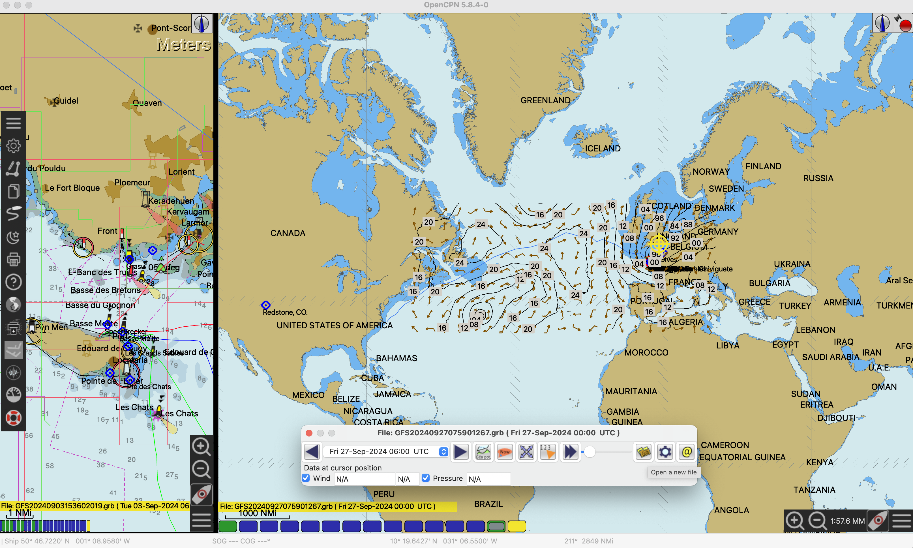

Un tuto Passe-Coque
Un tuto Passe-Coque
OpenCPN & GRIBs
On suppose ici que le plug-in GRIB a été installé dans OpenCPN.
On procède en plusieurs etapes :
- On définit un requête GRIB
- Cette requête est ensuite envoyée par email à query@saildocs.com
- En réponse à cet email, le fichier GRIB arrive en attachement
- On download ce fichier GRIB
- Il peut être ensuite affiché dans OpenCPN
Définition de la requête GRIB
On clique sur l'icône du plug-in GRIB.
Ce qui fait apparaitre la boite de dialogue suivante :
On accède à la création de la requête en cliquant sur le '@' tout à fait à droite.
On est alors invité à draguer sur la carte la zone du GRIB à définir, et à re-cliquer sur le '@' une fois que c'est fait.
Ce qui fait apparaitre le dialogue suivant :
On peut définir les paramètres de la requête, qui est composée dynamiquement dans le bas du dialogue.
send GFS:67N,8S,79W,12E|0.5,0.5|0,3,6..72|WIND,PRESS,WIND500,HGT500
Attention à la taille du fichier GRIB (indiquée sous la requête), une taille de plus de 10Mb (comme ci-dessus, 25.07 MB) peut constituer un problème...
Envoi de la requête GRIB
Attention : Si on clique "Send", la requête sera envoyée par l'appli mail définie par défaut sur le laptop où fonctionne OpenCPN !
Ce qui n'est pas forcément ce qu'on veut faire.
Le sujet du mail doit être grib-request, le destinataire doit être query@saildocs.com,
et le contenu du mail est la requête qu'on a composée, en mode plain-text.
La requête est donc ici send GFS:67N,8S,79W,12E|0.5,0.5|0,3,6..72|WIND,PRESS,WIND500,HGT500
Réception du GRIB
Après un petit moment, la réponse arrive dans l'inbox de l'expéditeur de la requête.
Affichage du GRIB
On download ce fichier sur le laptop, et il est alors possible de l'ouvrir dans OpenCPN (3e icône en partant de la droite) :

À voir aussi
Weather Wizard Project, affichage des GRIBs sans OpenCPN.
© 2024, 2025, etc, Passe-Coque